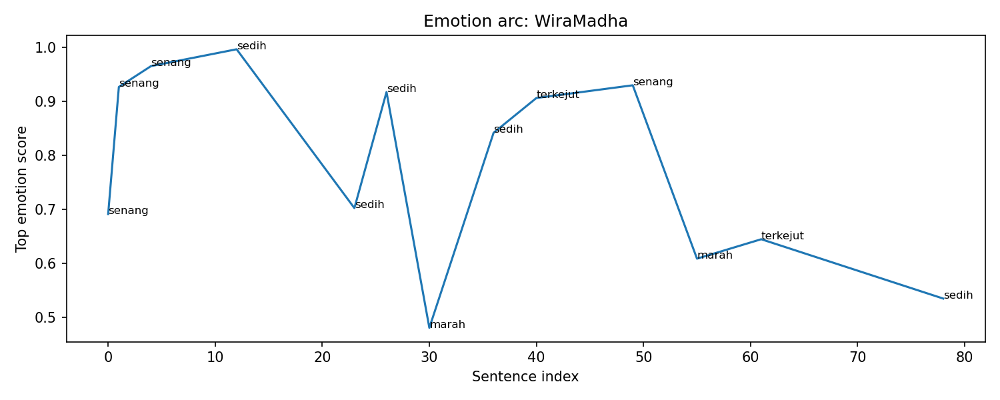
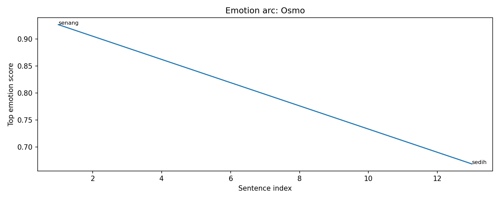

Overall Chapter Summary
Wira and Sylvia journey toward Gunung Bromo but face challenges with their mounts. They stop in Suradikarta to upgrade Sylvia's mount, discuss skills, and prepare to hunt a World Boss.
Chapter Drift Analysis
Similarity: 0.8629
Drift: 0.1371
Low drift. The chapter remains semantically close to the early story baseline.
Bug Severity Distribution
Story Bugs Found
Event ID ev_001_001 appears with different summaries.
Meaning: The same event ID ev_001_001
is used for different narrative moments.
Earlier version: Wira selects the quest to Mount Bromo and acquires a swift mount named Osmo.
New version: Wira comforts Sylvia about her mount and they decide to search for a nearby town.
Why it matters: duplicated event IDs can corrupt causality, item ownership, memory tracking, and location tracking.
Event ID ev_002_001 appears with different summaries.
Meaning: The same event ID ev_002_001
is used for different narrative moments.
Earlier version: The team battles the Agni Centipede, using their skills effectively to survive and defeat the monster.
New version: Wira buys Sylvia a new mount and additional gear for their upcoming challenges.
Why it matters: duplicated event IDs can corrupt causality, item ownership, memory tracking, and location tracking.
Wira appears in two locations at the same story step.
Meaning: This indicates spatial continuity risk. A character may appear in conflicting places at the same story step.
Sylvia appears in two locations at the same story step.
Meaning: This indicates spatial continuity risk. A character may appear in conflicting places at the same story step.
Osmo moves from Cinta Bumi to Wira without explicit loss/give event.
Meaning: This indicates item continuity risk. A character may be using, owning, or transferring an item without proper setup.
Osmo moves from Cinta Bumi to Sylvia without explicit loss/give event.
Meaning: This indicates item continuity risk. A character may be using, owning, or transferring an item without proper setup.
Wira appears in two locations at the same story step.
Meaning: This indicates spatial continuity risk. A character may appear in conflicting places at the same story step.
Sylvia appears in two locations at the same story step.
Meaning: This indicates spatial continuity risk. A character may appear in conflicting places at the same story step.
Wira uses Potion LUK UP before acquiring it.
Meaning: This indicates item continuity risk. A character may be using, owning, or transferring an item without proper setup.
Sylvia uses Potion LUK UP before acquiring it.
Meaning: This indicates item continuity risk. A character may be using, owning, or transferring an item without proper setup.
WiraMadha purchases multiple high-value items for Sylvia, including a premium mount and expensive equipment, without a clear explanation of his financial situation despite previous mentions of grinding for gold. This raises the question of whether this wealth is inconsistent with prior character development.
Type: Missing Details
Definition: A vital piece of information, a key item, or a character’s injury is forgotten, conveniently disappears, or magically reappears between chapters or scenes.
Sylvia’s introduction of her skill aspirations and the details of obtaining them conflicts with the nature of her character, as previously she seemed more of a novice who was focused on basics. Her knowledge of advanced skills and item requirements does not align with this perceived lack of experience.
Type: The Contradiction
Definition: A character acts completely out of line with their established personality traits, or previously known facts are suddenly altered to fit a new scene.
Character Sheet
Summary of character state, current actions, potential future plot hole risks, and acquired items/spells in this chapter.
Character Arc Analysis
Buto Kalong

Emotional Arc Summary
Buto Kalong's emotional journey begins with a sense of sadness as the quest to hunt him is laid out. This transitions to excitement as Wira and Sylvia anticipate facing the World Boss under the full moon.
Action-Based Interpretation
Initially, Wira discusses the necessity of hunting Buto Kalong, setting a sobering tone. However, excitement builds as they learn of the specific conditions that allow the monster to appear, reflecting the characters' escalating enthusiasm for the challenge ahead.
Key Turning Point
The climax occurs when Buto Kalong appears, marking a pivotal moment. The emotional shift from planning to confrontation highlights both the risks and thrills involved in their endeavor, elevating anticipation.
Narrative Meaning
This chapter encapsulates the blend of fear and exhilaration associated with looming challenges. It effectively portrays the dual nature of adventure against seemingly daunting foes.
Potential Writing Issue
The initial sadness may feel inconsistent with the subsequent joy, as the character's emotional arc could benefit from a smoother transition between these conflicting emotions during their preparations.
WiraMadha

Emotional Arc Summary
WiraMadha experiences a fluctuating emotional journey, initially feeling happiness as he progresses toward Gunung Bromo. However, this shifts to sadness upon realizing the inadequacy of Sylvia's mount, followed by a brief moment of anger. Ultimately, he regains a sense of positivity as they prepare for their next challenge.
Action-Based Interpretation
Wira's emotions correlate closely with his actions. His laughter over his mount's speed contrasts sharply with his concern for Sylvia, prompting him to purchase her a premium mount and accessories, signifying deeper feelings of responsibility and care. This shift to sadness illustrates his empathy for her situation.
Key Turning Point
The key turning point occurs when Wira decides to equip Sylvia not just with a mount but also with armor and accessories. This reflects his commitment to her growth and their shared journey, marking a shift in his emotional state from sadness back to a form of optimism.
Narrative Meaning
The emotional arc underscores themes of loyalty and support in relationships, as Wira navigates his feelings while ensuring Sylvia is prepared for challenges ahead.
Potential Writing Issue
The transition from sadness to anger appears abrupt, potentially leading to confusion regarding Wira's emotional consistency, as the actions do not fully justify this emotional variance.
Osmo

Emotional Arc Summary
Osmo experiences a shift from excitement to sadness as the journey progresses. Initially, he feels happiness at the speed of Wira's mount, yet this is juxtaposed by a sense of sadness when a new mount is purchased for Sylvia, indicating feelings of inadequacy or loss.
Action-Based Interpretation
In this chapter, Osmo's actions are minimal; he primarily observes and processes the challenges faced by Sylvia's mount. His decision not to intervene or suggest backup reflects his internalized sadness regarding their mounting difficulties.
Key Turning Point
The key moment occurs when Sylvia acquires the new emerald mount. This action symbolizes a significant change for Osmo, as it signals a moment of stepping up, reinforcing his emotional downturn as he grapples with his feelings of helplessness.
Narrative Meaning
This emotional arc highlights themes of companionship, competition, and the emotional impacts of perceived inadequacies among friends. As challenges arise, Osmo’s journey serves as a mirror to his internal conflicts.
Potential Writing Issue
The emotional shift from joy to sadness lacks direct action support from Osmo, presenting a potential inconsistency. This could be mitigated by providing more insight into Osmo's reactions or thoughts during key events.
Sylvia

Emotional Arc Summary
Sylvia experiences a fluctuating emotional journey, beginning with excitement about the adventure but transitioning into fear and sadness due to her inadequate mount. This is followed by surprise and joy when Wira provides her with a new mount and gear.
Action-Based Interpretation
Key Turning Point
The pivotal moment occurs when Wira purchases the new mount and gear for Sylvia, significantly boosting her spirits and optimism for future challenges as she begins to envision her ideal build.
Narrative Meaning
This emotional arc illustrates themes of support, growth, and the complexities of self-worth, aligning Sylvia's emotional state with her journey toward empowerment through teamwork.
Potential Writing Issue
Event Timeline
Lore Graph
Nodes represent characters, scenes, events, items, facts, and locations.